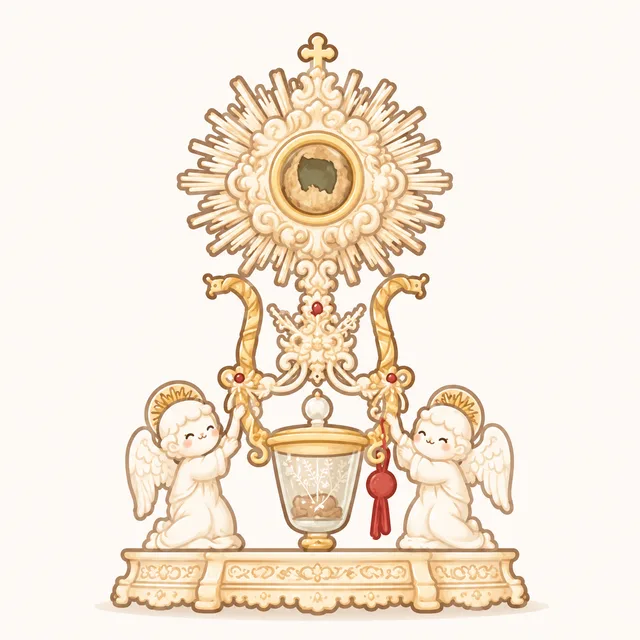

Milagre de Lanciano
O mais antigo milagre eucarístico documentado da Igreja, ocorrido no século VIII na Itália, onde o pão e o vinho se transformaram visivelmente em carne e sangue.
Nossa Senhora da Conceição Aparecida
Descubra a emocionante história da nossa Padroeira, a Mãe que acolheu o povo brasileiro desde que sua imagem foi encontrada nas águas do Rio Paraíba.
São Bento
Conheça a história de São Bento, o Padroeiro da Europa e fundador da vida monástica ocidental, e o profundo significado espiritual de sua famosa Medalha de Proteção.
Curiosidades da Fé Cristã
Fatos surpreendentes sobre a Bíblia, a história da Igreja e a fé que atravessa os séculos — para aprender, compartilhar e se maravilhar.

Lanciano
Ver matéria
Aparecida
Ver matéria
São Bento
Ver matéria
Curiosidades
Ver matéria